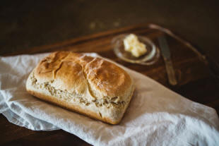

The Bridge: Determiners
|  |
| Lots of bread and a little butter |
In the real world, a determiner is someone who makes a decision.
In our world, however, it is a language item which helps us make a
decision concerning a word's meaning.
A dictionary definition of determine
includes
to control or influence
directly
(Cambridge International Dictionary of
English)
and that's a good place to start because determiners in languages do
just that: they control how we see a noun. In that sense, all
determiners are adjectival because they modify the noun. They are,
however, not adjectives, although they are adjectival.
Examples may help.
In:
I washed the car
vs.:
I washed a car
it is fairly easy to see that the determiners, the articles the
and a respectively, control how we see the word car,
either as a car whose
ownership is known to the hearer / reader or as an unknown example of
the general category of car.
In:
There's some bread in the bin
vs.:
There's a little bread in the bin
vs.:
There's plenty of bread in the bin
we have determiners controlling how we see the mass noun bread:
an adequate amount, a marginally adequate amount or a large amount,
respectively.
Determiners are a closed-class set of words. That means that the
number of them is fixed and it is vanishingly rare in any language to
invent or introduce new ones.
In older analyses of this area, determiners were absent as a category
and, instead, word classes such as articles, possessive adjectives and
demonstrative adjectives were identified to cover various sorts of
determiners.
That may well be how the area was treated on your initial training
course because it is an easier, if less sustainable, approach.
For teaching purposes, it makes sense to define determiners a little
more exactly because it is not very helpful to tell a learners that this
or that word or phrase is a determiner and leave it at that.
Across languages, determiners are very variable in nature with some
languages, such as Japanese, having a very complex set and others having
very few. That, too, is something to bear in mind.
 |
Two major classes of determiners |
- Determiners proper are words and phrases such as some, a,
enough, my, two, these, several, a few and so on. These
sorts of determiners do not co-occur so we cannot have, for example:
*several the people
*enough some bread
and so on. - Pre-determiners can themselves be followed by determiners.
This class includes words and expressions such as all, triple, a
number of, half, a slice of and so on. These do
co-occur with other determiners so it is quite normal to encounter:
a slice of the cake
all of those people
half a loaf
etc.
There is a separate guide to pre- and post-determiners, linked below, so they will not be further considered here.
 |
Two sorts of determiners |
Determiners themselves fall into two major categories of use in English which are not parallelled in many other languages. The overriding decision one makes when selecting a determiner is twofold in English (but not in many languages):
- Am I talking about a definite item or an indefinite
item? Select:
I saw some people on the bridge
I saw a man in the street
for indeterminacy or select:
I saw those people on the bridge
I saw the man in the street
when the reference is to a specific item or items. - Am I using a mass noun or a count noun? Select:
She has little furniture in the house
They came without much delay
for mass nouns or select:
She collected many signatures
They have a few questions
for count nouns.
 |
To check what you know, identify
whether the determiners in these examples refer to mass or
count nouns (or both). At the end, click on the |
- He gave me some bread and some biscuits
- He passed an examination
- She gave me the books and the paper
- Can you lend me your car?
- I need a little sugar and milk
- Give me a few minutes
- Pass me those matches
- ... and that oil
- Which wool and needles do you use?
Click here when you are ready:

| Example | Determiner | Mass | Count | Notes | Specific or indefinite? | |
| 1 | He gave me some bread and some biscuits | quantifier |
|
|
This determiner can be used with both. | Indefinite |
| 2 | He passed an examination | indefinite article |
|
|
Indefinite articles may not be used with mass nouns but they can in some languages. | Indefinite |
| 3 | She gave me the books and the paper | definite article |
|
|
Definite articles can be used with both mass and count nouns. | Specific. This is the meaning of a definite article |
| 4 | Can you lend me your car? | possessive determiner |
|
|
All possessive determiners (or possessive adjectives in the older analysis) can be used with both mass and count nouns. | Specific |
| 5 | I need a little sugar and milk | quantifier |
|
|
This determiner is confined to mass nouns. | Indefinite |
| 6 | Give me a few minutes | quantifier |
|
|
This is confined to count nouns. | Indefinite |
| 7 | Pass me those matches | demonstrative |
|
|
Plural demonstrative determiners (also these) cannot be used with mass nouns. | Specific |
| 8 | and that oil | demonstrative |
|
|
Singular demonstrative determiners (also this) can be used with both. | Specific |
| 9 | Which wool and needles do you use? | wh-determiner |
|
|
All wh-determiners can be used with both. | Specific. If the questions is What do you need?, the reference is indefinite. |
A grey area |
The troublesome items are few, fewer, fewest, little, less, least, a
few, a little.
One rule for use remains absolute:
The items without the article (few, fewer,
little, less) refer to concepts of inadequate numbers or amounts:
we have few trees in the garden
I have little to say
we have fewer ideas now
it has less importance
The items in the superlative (fewest, least) refer to the
smallest number or amount, respectively, and are used with the definite article:
the fewest points were scored by us
that is the least important problem
The items with the article (a few, a little) suggest a
satisfactory amount but not plenty:
we have a few ideas
can I have a little butter?
The items with the article cannot
be used with comparative and superlative forms.
*we have a
fewer ideas
*she has a fewest glasses
*can I have a less butter?
*it is a least important idea
The second rule for use once was simple:
Use the few
set for plural count nouns and the less
set for mass nouns so:
a few people
a little bread
*a few bread
*a little people
fewer pounds
less money
*less pounds
*fewer money
the fewest people
the least money
*the fewest money
*the least pounds
However, the rule, such as it is, is constantly flouted with the use
of the less series taking over, especially in comparative and
superlative forms, and one hears and reads:
There are less people here today
The least people are in the dining room
etc.
Nevertheless, the rule still applies in the base forms and
the little people
vs.
the few people
still mean different things, and we do not allow:
*a little biscuits
There is a grey area, too, concerning numerals and both:
less than six
and
fewer than 6
are both heard and read.
The form of choice when the numbers refer to a quality rather than
individual items is less so we have:
less than 10 degrees
less than five kilos
etc. although the application of the rule as it was would prefer:
fewer than 10 degrees
fewer than five kilos
If you tell learners that it doesn't matter any longer and the
distinction between fewer and less is not longer
valid, do not be surprised if they produce:
*a little apples
because they may be persuaded that the new rule applies to the base
forms, too, and it doesn't.
Of course, if learners stick to the mass vs. countable rule in all cases,
they will always be right.
The rules in summary |
For a consideration of most common determiners in English, see the in-service guide to the area (and others linked below).
The table of rules, which appears in the in-service guide to this area is like this, with the black areas showing disallowed combinations:
| Class | Possible combinations | Examples | Notes | |||
| A |
|
the, possessives (my, your etc.), no, whose, which(ever), what(ever), some, any | These words can all appear
with all three types of noun. Some and any can only be used with the singular count nouns when they are stressed (e.g., some fact!, any port in a storm) |
|||
| B |
|
Ø (zero article), some, any, enough | These cannot occur with the singular count nouns and some and any are unstressed. | |||
| C |
|
this, that | These two demonstratives can only appear with singular and mass nouns. | |||
| D |
|
these, those | These two demonstratives can only appear with plural count nouns. | |||
| E |
|
a(n), every, each, either, neither | These can only appear with singular count nouns. | |||
| F |
|
much | This word only appears with mass nouns. |
An issue with determiners is that the subject is rarely the aim of
any teaching but is often one in which errors are made by learners who
imagine, failing evidence to the contrary, that the system will be much
as it is in their first languages.
It rarely is, in fact, so teachers need to be alert to error and able
immediately to explain how determiners are used in English.
|
|
With that in mind,
try a test
to see if you can see what caused the errors. You have 20 seconds for each item, so be quick! |
This has been quite a short guide whose intention was to alert you to the most important aspects of determiners. For more, see the guides linked below.

| Guides in other areas | |
| Initial plus essential guides | In-service guides |
| mass and count | determiners |
| demonstrative essentials | pre- and post determiners |
| articles: essentials | classifiers and partitives |